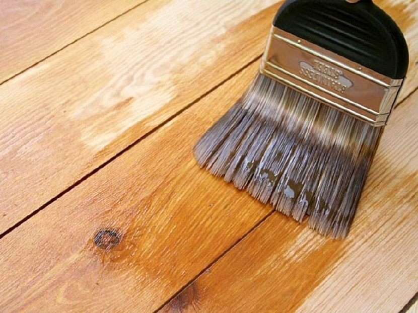

El barniz, aplicado a maderas y otras superficies de interior tiene como objetivo embellecerlas y aportarles resistencia física y química. En superficies exteriores, su aplicación contribuye a preservarlas de la acción de agentes atmosféricos. Existen diversos tipos de barniz.
